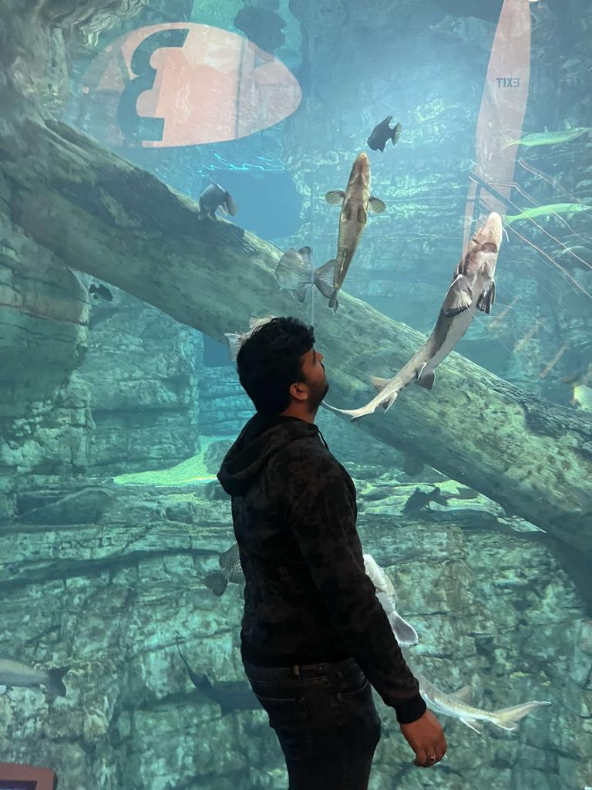

Resume
Praneeth Reddy Kolan
252 Revere Beach Pkwy, Chelsea, MA||224-XXX=-XXXX
Quick Summary
Seeking a beginner role to enhance and explore
my technical knowledge. I have the flexibility to
adapt to any new environment and work
tirelessly on interesting projects.
Education
MS Computer Information Systems [2022-2024]
New England College
B.Tech Mechanical Engineering [2017-2021]
Guru Nanak Institution
Intermediate Education MPC [2015-2017]
PAGE Junior College
Secondary Education
br>
Gurukula Vidyapeeth High School
Work Experience
Automotive Manufactures Pvt.Ltd Intern [July 2019]
Bore Replacement Supervisor
GSV Projects Pvt.Ltd Intern [June 2019]
Field Engineer For Machinery
ISIE Workshop Organiser [2019]
Skill Development On Electrical Design and Developement of Vehicles
SKILLS
Technical Skills
C, HTML, CSS, BOOTSTRAP, PYTHON
Operating Systems
Windows. MAC
Softwares
Auto CAD, Solid Works, Office Suite, Adobe Photoshop CC, Autodesk MAYA, iMOvie
EXTRA CIRCULAR ACTIVITIES
- Worked as the EB Member for Street Cause Gold [2020-2021]
- Rescued and fed more than 300 dogs and animals during lockdown[2020]
- Organizing committee member of SCG village Adoption Event [2019]
- Participated in Fashion Parade at PVT [2019]
- Awarded Finisher Medal in Marthi suzuki DEVIL's Circuit Event
- Awarded 2 Gold medal in Basketball at PAGE sports meet [2017,2018]
- Awarded as Sapphire Group head boy at St Joseph's high School [2012]
Gallery

Cover Letter
Praneeth Reddy Kolan
From:
Boston,MA.
To:
Hiring Mananger,
Milwaukee,WI.
I am writing to express my interest in the full stack developer position that you have posted. I believe that my experience and skills make me a strong candidate for this position.
I have been working as a full stack developer for the past five years, and I have extensive experience with both front-end and back-end development. I have worked on projects of all sizes, from small personal projects to large enterprise systems. My experience has given me the opportunity to work with many different technologies, including C#, Java, JavaScript, HTML5, CSS3, ASP.NET MVC, ASP.NET Web API, SQL Server, Entity Framework, jQuery, Bootstrap, AngularJS, Node.js and more.
My core strengths are my ability to learn quickly and my attention to detail. I pride myself on being able to pick up new technologies quickly and efficiently. I also take pride in my ability to write clean code that is easy to read and maintain. I believe that these skills are essential for any developer who wants to be successful in today’s competitive job market.
I would like to thank you for your time and consideration. I look forward to hearing from you soon.
Annotated Summary
Fish life span is more dependent on their feed and the condition of the water. The more we look after the more days they live. Unfortunately, fishes die the most compared to any other pets. To overcome this problem, authors have discovered a solution using the Internet of Things. Using microcontrollers, pH sensors, and a servo motor they invented a system to look after the feeding and water quality from time to time even without human assistance. The authors underwent a few phases and tested the working of the system. Thus, they got recognized by the IR4.0 system which is a development system supporting fishes.
The system consists of two microcontrollers controlled by a WIFI module. The pH sensor and servo motor for feeding are connected to controllers. Lastly connecting them to the internet and the BLYNK application through which users can monitor the condition of fish and water.
As a part of testing, the authors tested in three phases. In the first two phases, they haven’t used a filter for water filtration and fed the fish twice and thrice a day as 2 sets of feeding. Followed by without filter in the next two phases. In the last two phases also fed the fish twice and thrice per day. The phases analysis came out very helpful. Feeding the fish over leads to acidic water and the same for water without a filter. So they concluded to feed the fish twice a day with good filtration along with temperature settings.
Critique The Article
This article is an IEEE research paper that is reputable and the system mentioned in this paper is certified by the fish development system as IR4.0. By this, we can say that it is reputable.
This research topic is helpful for me as I have been working on sensors from my undergraduate projects. pH sensor using LCD indicator is new to know. Hopefully, I will remember this and work on it using in my new projects.
Bibliography
A. K. Pasha Mohd Daud, N. A. Sulaiman, Y. W. Mohamad Yusof, and M. Kassim, "An IoT-Based Smart Aquarium Monitoring System," 2020 IEEE 10th Symposium on Computer Applications & Industrial Electronics (ISCAIE), 2020, pp. 277-282, DOI: 10.1109/ISCAIE47305.2020.9108823.
Website- https://ieeexplore.ieee.org/document/9108823
Annotated Bibliography
Alalawi, H., Alsuwat, M., & Alhakami, H. (2021). A Survey of the Application of Artificial
Intelligence on COVID-19 Diagnosis and Prediction. Engineering, Technology & Applied Science Research, 11(6), 7824–7835. https://doi.org/10.48084/etasr.4503
This article talks about the classification of supervised learning in terms of machine learning. Through this article, readers can have a clear study and apply the COVID-19 outbreak diagnosis and readers can predict the upcoming wave impact. The data help readers to learn the classification methods. The article is peer-reviewed and published in engineering, technology, and applied sciences research (2021). This article helps to strengthen skills in classification methods using various datasets and their variations.
Sandra, S., Raghavan, A., & Madan Kumar, P. (2022). Application of artificial intelligence
in the diagnosis and survival prediction of patients with oral cancer: A systematic review. Journal of Oral Research & Review, 14(2), 154–160. https://discovery-ebsco-com.nec.gmilcs.org/c/5lhlqz/viewer/html/a7gqljdzbj
This article conveys a systematic review to find the survival rate among oral cancer patients using artificial intelligence. The forms of the results are used with machine learning methods. Article studies show that only a 5-year survival rate is able to predict by AI models. The accuracy of the machine learning methods- decision tree classifier, logistic regression, and boosted decision tree models were 76%, 60%, and 88.7%, respectively. This article is published recently in EBSCO. These studies are important for identification and survival prediction, which will contribute to future advancements, change in the treatment plan, and reduce healthcare problems.
Xiangru Li, Jinfan Tian, Nan Nan, Chenchen Tu, Dongfeng Zhang, Xiantao Song, and
Hongjia Zhang. (2021). Artificial Intelligence Based Myocardial Ischemia Detection in Cardiac Radiology, 109–113. https://doi-org.nec.gmilcs.org/10.1145/3500931.3500951
In this article, the application of AI in cardiac radiology to noninvasively detect myocardial ischemia is overviewed. The summarized current limitations and prospects of AI in the field of myocardial ischemia are also mentioned. The article is published in the Proceedings of the 2nd International Symposium on Artificial Intelligence for Medicine Sciences (ISAIMS 2021). This article helps to accomplish the task of image recognition very well and make accurate judgments with the same effectiveness as imaging experts.
Library Resources
Article From ACM
Daan Odijk and Anne Schuth. 2017. Online Learning to Rank for Recommender
Systems. In Proceedings of the Eleventh ACM Conference on Recommender Systems (RecSys '17). Association for Computing Machinery, New York, NY, USA, 348. https://doi.org/10.1145/3109859.3109925
The New York Times invests in Blendle, a startup that creates a platform for users to discover and support the greatest news available worldwide. Users just have to pay for what they read while reading the entire content of 120 publications. We create a highly detailed profile for each of our readers based on the characteristics of the articles they read. Our machine learning pipeline receives data from both enriched articles and user profiles. As part of our ongoing research, each of our users is exposed to a slightly altered version of our ranking algorithm in online learning to rank scenario. To determine the direction in which we should update the model, we watch how our consumers interact with it. Every morning at around five o'clock, our editorial staff rises to review what was posted the previous night.
In this talk, I will detail how we enrich articles in a streaming fashion and how we use online learning methods to learn a ranking model. I will also talk about how we deal with the time constraints of the problem we are trying to solve.
Article From Ebsco
Warren, N. L., Farmer, M., Gu, T., & Warren, C. (2021). Marketing Ideas:
How to Write Research Articles that Readers Understand and Cite. Journal of Marketing, 85(5), 42–57.
The marketplace of ideas is academia. Scholars promote their ideas through writing in a similar way to how businesses advertise and package their products. This research demonstrates that scholars write imprecisely in part because they forget that they know more about their research than readers, a phenomenon known as "the curse of knowledge," in two trials and a text analysis in top marketing journals. Abstraction, technical language, and passive writing are three behaviors that make academic writing challenging to grasp, and they are all made worse by knowledge or familiarity with one's own study.
More abstract, technical, and passively written articles are more difficult for readers to understand and are less likely to receive citations. The authors urge academics to overcome the "curse of knowledge" and offer two resources—a lesson and a website called "writingclaritycalculator.com"—to assist them in identifying and correcting unclear writing so that they can produce more influential papers.
Article From ProQuest
Newton, J. (2010). Is cloud computing green computing? GPSolo, 27(8), 28-31.
https://www.nec.gmilcs.org/login
"Cloud Computing" evokes an almost ethereal image of an industry with little or no environmental impact, the physical infrastructure running the cloud has a very real, and growing, environmental footprint. The Smart 2020 report by the Climate Group estimates the energy consumption of these and other cloud data centers to be 330 billion kilowatt hours per year.
To meet the constantly growing need for computing and data storage, computing is the most energy-efficient strategy we have. The promise of true green cloud computing depends on situating cloud data centers next to clean, renewable sources of energy, despite the fact that cloud computing's architecture is an order of magnitude more efficient than conventional on-premises server systems. In order to ensure that cloud computing is truly green computing, policy decisions that promote the use of green energy sources must strike a balance between the needs of cloud computing providers for reasonably priced energy and the need to lessen the overall environmental impact of cloud computing.